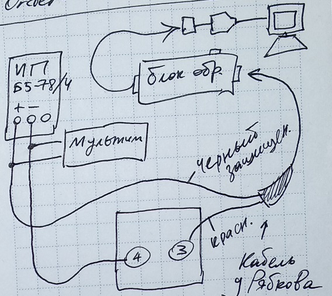

БДКГ-27. Как рассчитать протокол поверки
Открыть расчет в excelПротокол поверки
- Собрать по схеме 
- Подключиться к блоку обмена БДКГ-27 с помощью SARKtech
- Выставить сопротивление 109 Ом:
- На блоке питания выставить такое напряжение, при котором показания мощности дозы (в SARKtech) будут равны 7 Зв/ч (примерно 4В). Для расчета значений напряжений вписать полученное напряжение в поле ввода и нажать "Рассчитать"


Точка 1
Точка 2
Выставить сопротивление 108

Выставить на блоке питание следующее напряжение:
Снять показания мощности дозы 3 раза (SARKtech), каждый раз нажимая "Сброс".
Записать данные в таблицу:
Точка 3
Выставить сопротивление 107

Выставить на блоке питание следующее напряжение:
Снять показания мощности дозы 3 раза (SARKtech), каждый раз нажимая "Сброс".
Записать данные в таблицу
Точка 4